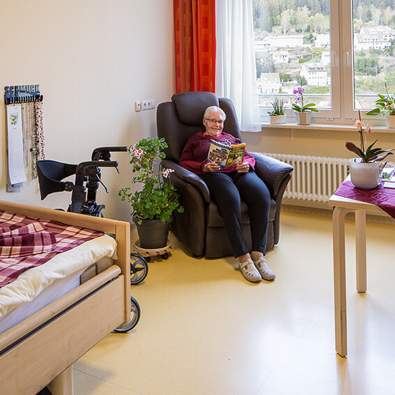
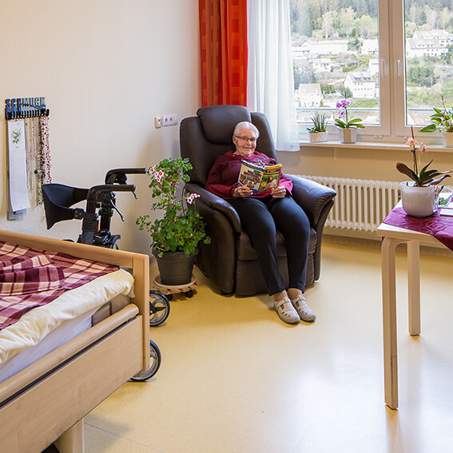

St. Cyriak Wohnen und Pflege
Wir – das gesamte Team der Pflegeeinrichtung St. Cyriak Wohnen und Pflege – begrüßen Sie herzlich auf unserer Website.
Montag bis Donnerstag: 09.00 Uhr bis 12.00 Uhr
Oder schreiben Sie eine E-Mail.
Die Wohnbereiche sind unter den Durchwahlnummern erreichbar.
Unser Angebot mit Herz
Sie sind pflegebedürftig oder suchen nach Antworten für Ihre Angehörigen? Wir beraten Sie gerne!
Vollstationäre Pflege
Wir unterstützen Sie in ihrer Pflegehilfsbedürftigkeit ganzheitlich mit Empathie, Menschlichkeit und Gemeinschaft.

Kurzzeit- und Verhinderungspflege
Es steht eine Reha kurz bevor oder Ihre Angehörige bzw. die pflegerische Bezugsperson möchte gerne in Urlaub gehen? Bei uns haben Sie die Möglichkeit das Angebot der Kurzzeitpflege in Anspruch zu nehmen.
Beschützendes Wohnen
Wir haben einen beschützen Wohnbereich für dementiell erkrankte Menschen. Hier legen wir Wert darauf, dass alle Sinne im Alltag so lange als möglich erhalten bleiben. Unser Mitarbeiterteam der Pflege und sozialen Betreuung setzt auf Ressourcenerhalt. Egal ob beim Entspannen im Snoezeln oder beim Spazieren gehen im Klara-Siedle-Sinnegarten, um frische Schwarzwaldluft einzuatmen: uns liegt jeder Bewohner am Herzen.
Betreutes Wohnen
Unser Angebot für Menschen mit einer noch relativ großen Selbstständigkeit und Mobilität. Hier wohnen Sie in einem Appartement und können am sozial-gesellschaftlichen Leben der Einrichtung teilnehmen.
Offener Mittagstisch
Unsere hauseigene Küche kocht täglich frisch und verwendet Produkte und Zutaten aus der Region. Sie zählen sich schon zu der etwas älteren Generation und haben Interesse, bei uns in Gesellschaft Mittag zu essen, dann melden Sie sich bis 9:00 Uhr dazu an.

Unsere Werte
St. Cyriak Wohnen und Pflege versteht sich in seinem Kernbereich, der Pflege und Betreuung alter, pflegebedürftiger Menschen, sowohl als Dienstleister und Versorger. Dabei ist es in der pflegerischen Versorgung und Betreuung unser Ziel: